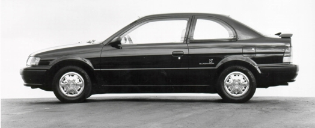

Blackhawk Trim">
Sideview of the Blackhawk Trim
Tercel
The day I turned 18 was when I was able to legally drive this bad boy coupe. It felt like it was
a car that fit my naive personality to a tee. It was quick and took whole bunch of damage yet
very fuel efficient. One time I was playing around with drifting with it on a gravel road with a
few freinds and the handbrake locked which resulted in all three of us ending up in a ditch. The tail
end of the car was up in the air with only the driver's side front wheel being the only wheel still
on the ground. I simply put the car in reverse and with that one wheel we got out with just a few
scratches. Point being: durable. I went so far as to call it Black Hawk because of the decal that said just
that on it's side. (Blackhawk was a sporty-ish trim of the car.) The Tercel has been around since 1978
and has went through many facelifts and guttings until it was discontinued/replaced by the Corolla in
1999. I do wish they revamp the model in the future just so I can have a toy again.